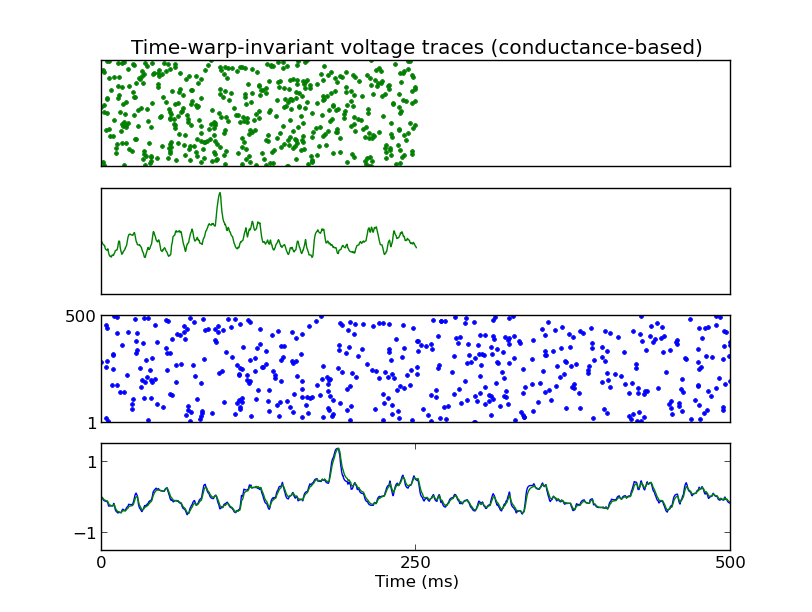
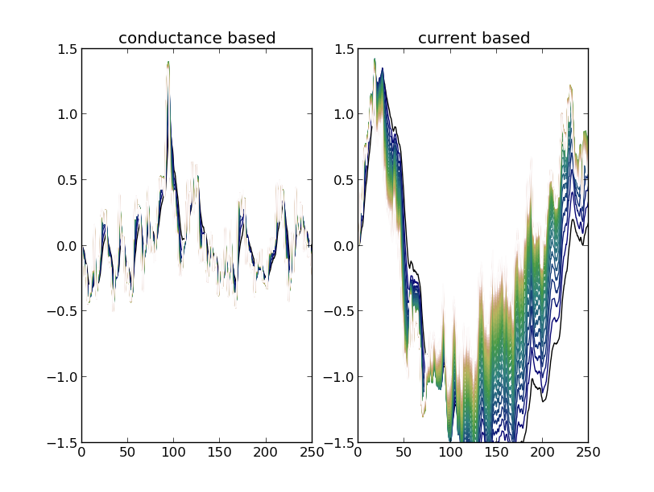

For the paper: Gutig R, Sompolinsky H (2009) Time-warp-invariant neuronal processing. PLoS Biol 7:e1000141 Abstract: Fluctuations in the temporal durations of sensory signals constitute a major source of variability within natural stimulus ensembles. The neuronal mechanisms through which sensory systems can stabilize perception against such fluctuations are largely unknown. An intriguing instantiation of such robustness occurs in human speech perception, which relies critically on temporal acoustic cues that are embedded in signals with highly variable duration. Across different instances of natural speech, auditory cues can undergo temporal warping that ranges from 2-fold compression to 2-fold dilation without significant perceptual impairment. Here, we report that time-warp-invariant neuronal processing can be subserved by the shunting action of synaptic conductances that automatically rescales the effective integration time of postsynaptic neurons. We propose a novel spike-based learning rule for synaptic conductances that adjusts the degree of synaptic shunting to the temporal processing requirements of a given task. Applying this general biophysical mechanism to the example of speech processing, we propose a neuronal network model for time-warp-invariant word discrimination and demonstrate its excellent performance on a standard benchmark speech-recognition task. Our results demonstrate the important functional role of synaptic conductances in spike-based neuronal information processing and learning. The biophysics of temporal integration at neuronal membranes can endow sensory pathways with powerful time-warp-invariant computational capabilities. Brian simulator models for the basic model are available at this web page: http://briansimulator.org/docs/examples-frompapers_Guetig_Sompolinsky_2009.html The simulation reproduces Fig. 2:  and Fig. 3C (but not in a speech recognition context):  This simulation requires Brian which can be downloaded and installed from the instructions available at http://www.briansimulator.org/ For support on installing and using Brian simulations there is a support group at https://groups.google.com/group/briansupport.